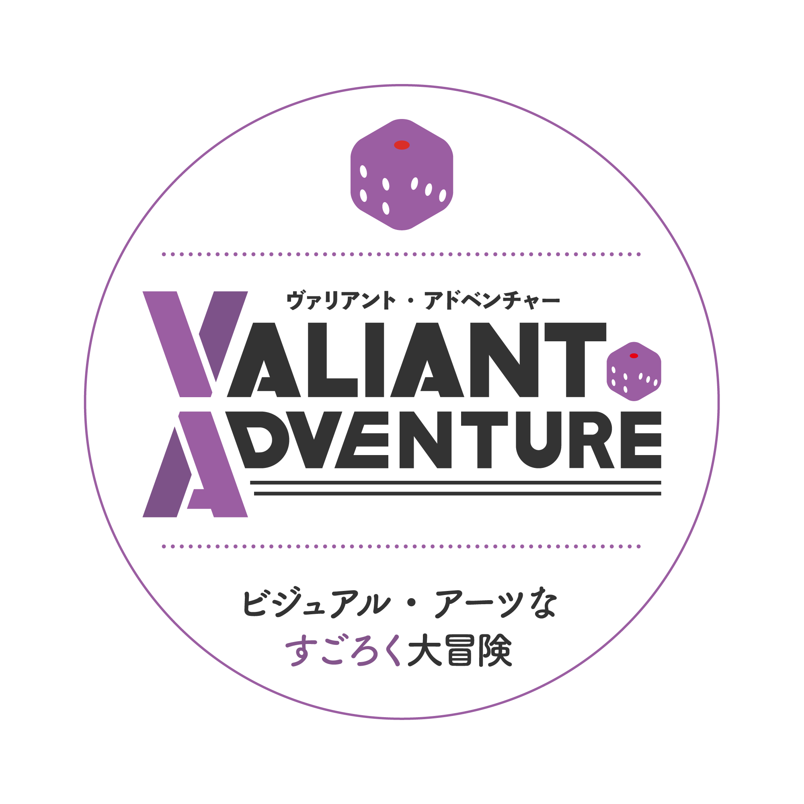

この冊子はオープンキャンパスに参加してくれたビジュアル・アーツ専修志望の皆さんのための、一風変わったすごろく型マップです。ゲームを通して、ビジュアル・アーツ専修の学生がどんな教室でどんな授業をしているのかを体験してみましょう!
SCROLL
この冊子はオープンキャンパスに参加してくれたビジュアル・アーツ専修志望の皆さんのための、一風変わったすごろく型マップです。ゲームを通して、ビジュアル・アーツ専修の学生がどんな教室でどんな授業をしているのかを体験してみましょう!
SCROLL
1.自分の駒とサイコロを用意する。
2.サイコロを振る順番を決める。
3.サイコロを振り、出た目の数だけコマを進める。止まったマスに指示が書いてある場合はそれに従う
4.決めた順番で３を繰り返し、最初にゴールした人の勝ち。
〇進むマス
→指示された分、もしくは指示されたマスへ進められる。
〇戻るマス
→指示された分、もしくは指示されたマスへ戻る。
〇休むマス
→指示された回数分、サイコロを振る順番を休む。
〇ワープマス
→指示された特定のマスに移動する
特定のワープマスに進むと食堂エリアの入り口マスに移動します。
食堂エリアではサイコロを振りお会計マスに止まることができるまでサイコロを振り続けます
お会計マスにたどり着くことが出来ると、戻り、通常エリアですごろくが再開となります。
制作
武藤 由依
矢追 稔
松永優斗
トムクラトック ポンチター